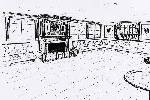
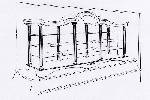
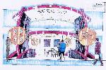
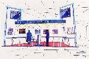
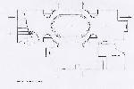
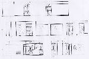
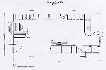
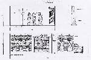

Design Service InformationClients
Clients fall into one of the following categories:
- Those opening brand new premises, in need of a complete turnkey (start to finish) project.
- Those wishing to upgrade their existing premises
- Those requiring new fixtures/fittings/display furniture, etc.
Design Procedure
Once you have identified your need from the above list, the next step is to form in your mind an idea as to what you want your new premises/cabinets to be along the lines of (ie, traditional, contemporary, complete one-off, etc.) and the more information you can provide at the start of a project, the more smoothly a project will run, saving time and money.The information you gather and supply to the designer is commonly known as a design brief.
Design Brief
The design brief includes information such as
- Style of interior required
- Type of clientele/customer to be catered for
- Type/lines of jewellery being sold
- Preferable colour schemes
- Security considerations
- Local planning considerations
- Approximate budget available
Once the design brief as been taken from the client, the rest of the design procedure is continued in the following order:
Sketch Work
The sketch work allows the Client to establish and agree upon basic likes/dislikes/finishes/appearance of the interior/cabinets, etc.Perspective Drawings
Perspective line drawings or perspective coloured visuals are carried out once a general design and finish has been agreed upon in order to give the client a better idea of the finished look.Click on thumbnails to enlarge drawings:
    Perspective line drawings Perspective colour visuals Full Working Drawings
Full working drawings/elevations are carried out once designs have been agreed upon in order to give an accurate picture of the completed project, to help establish the price of the work to be carried out and usually to act as workshop drawings from which items can be manufactured.Click on thumbnails to enlarge drawings:
    Plan View Elevations Plan View Elevations Project Management
Project management involves the complete management of the project, from initiation to completion (available on certain projects only).Design/Consultation Fees
- There is an initial minimum consultation fee of £125 + VAT within the UK and £300 + VAT and expenses for projects outside the UK (refundable against commencement of project).
- Design fees for Interior projects, including sketch to full working drawing stages varies according to scale of project. Please enquire for details.
- Design/drawing work for cabinets and displays etc usually carries a nominal fee. Again, please enquirefor details.